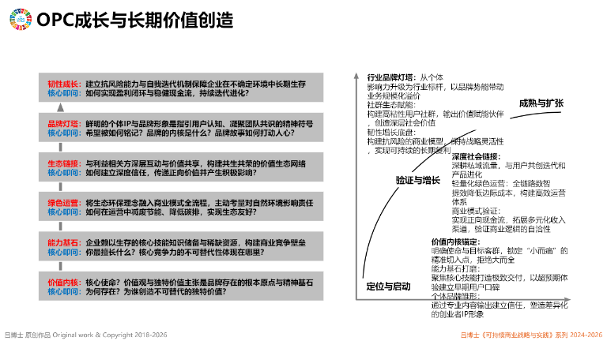

OPC可持续成长与长期价值创造模型
这一方法要处理什么
帮助OPC经营者同时管理价值定位、核心能力、运营方式、生态关系、品牌信任和个人韧性，并按启动、验证和扩张阶段形成成长路径。如何用OPC开启个人第二曲线，2026-10-31，幻灯片2—9 · OPC定义、成长阶段与长期价值
如何理解与运用这一方法
OPC不等于一个人承担全部工作
OPC的核心是以个人判断、专业认知、信任关系、品牌和可调用数字能力构建轻量组织。它可以连接伙伴、平台、供应商和智能体，而不是把所有职责压在一个人身上。如何用OPC开启个人第二曲线，2026-10-31，幻灯片2—4 · OPC根本属性
轻量不等于无治理。合同、财务、数据安全、客户责任和外部协作边界仍需明确；不同法域对一人公司的法律定义也需要单独核对。如何用OPC开启个人第二曲线，2026-10-31，幻灯片2—7 · OPC经营边界
阶段不是固定年限
OPC应根据价值主张验证、现金流、客户关系、交付能力、伙伴网络和风险状态判断阶段，而不是用注册时间、收入规模或人员数量机械划分。如何用OPC开启个人第二曲线，2026-10-31，幻灯片7 · 三阶段成长路径
工作坊把OPC商业模式用于第二曲线创业者及公益、社会企业、教育和政府等可持续发展开拓者的真实问题讨论，说明模型可服务多类轻量组织探索，但仍需结合责任、资源和业务复杂度判断是否适用。OPC商业模式与成长路径说明，2026-11-05，第1段 · OPC商业模式工作坊对象与应用
构成维度
- 价值内核
明确OPC要解决的真实问题、服务对象、长期使命和复合价值方向，使商业选择不被短期机会不断拉散。
如何用OPC开启个人第二曲线，2026-10-31，幻灯片7 · 价值内核 - 能力基石
识别个人不可替代的判断、专业知识和可信经验，并通过数字工具、伙伴和智能体扩展可调用能力。
如何用OPC开启个人第二曲线，2026-10-31，幻灯片7 · 能力基石 - 绿色运营
以轻量、透明和可持续的方式管理资源、供应、交付、数据与风险，避免规模扩大后产生不可控负担。
如何用OPC开启个人第二曲线，2026-10-31，幻灯片7 · 绿色运营 - 生态链接
与利益相关方、专业伙伴、平台和客户建立互惠关系，通过协同而非单人包办完成价值创造。
如何用OPC开启个人第二曲线，2026-10-31，幻灯片7 · 生态链接 - 品牌灯塔
用一致的价值主张、可信证据和长期交付形成个人品牌，使客户和伙伴能够理解并选择OPC。
如何用OPC开启个人第二曲线，2026-10-31，幻灯片7 · 品牌灯塔 - 韧性成长
同步管理现金流、知识更新、精力、支持网络和风险边界，使个人与经营系统能够承受波动并持续迭代。
如何用OPC开启个人第二曲线，2026-10-31，幻灯片7、9、46—51 · 韧性与创业者定力
如何用OPC开启个人第二曲线，2026-10-31，幻灯片2—9 · OPC定义、成长阶段与长期价值
实施阶段
- 阶段一：定位与启动
从个人能力和目标客户的真实问题出发验证价值主张，形成最小可行服务、基本交付流程和现金流边界。
如何用OPC开启个人第二曲线，2026-10-31，幻灯片7 · 定位与启动 - 阶段二：验证与增长
通过客户反馈、伙伴协作和标准化交付检验模式，逐步沉淀品牌、知识、数据和可复用能力。
如何用OPC开启个人第二曲线，2026-10-31，幻灯片7 · 验证与增长 - 阶段三：成熟与扩张
在不丢失价值内核和服务质量的前提下，运用伙伴网络、数字系统和智能体扩大能力边界，并建立持续治理。
如何用OPC开启个人第二曲线，2026-10-31，幻灯片7 · 成熟与扩张
如何用OPC开启个人第二曲线，2026-10-31，幻灯片2—9 · OPC定义、成长阶段与长期价值
相关图示

来源与定位
提供OPC经营模式、六个成长维度和三个发展阶段。
补充OPC方法面向第二曲线创业者及多类可持续发展开拓者的教学应用。